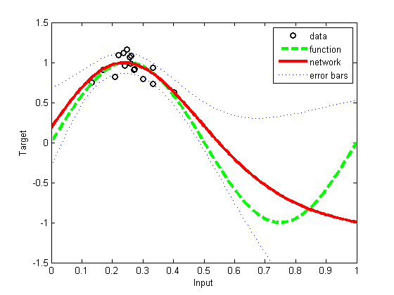

Modified version of netlab's demev1
We changed the plotting style slightly and got rid of the annoying pause statements, so the script can be run without user intervention
disp('This demonstration illustrates the application of Bayesian') disp('re-estimation to determine the hyperparameters in a simple regression') disp('problem. It is based on a local quadratic approximation to a mode of') disp('the posterior distribution and the evidence maximization framework of') disp('MacKay.') disp(' ') disp('First, we generate a synthetic data set consisting of a single input') disp('variable x sampled from a Gaussian distribution, and a target variable') disp('t obtained by evaluating sin(2*pi*x) and adding Gaussian noise.') % Generate the matrix of inputs x and targets t. ndata = 16; % Number of data points. noise = 0.1; % Standard deviation of noise distribution. randn('state', 0); x = 0.25 + 0.07*randn(ndata, 1); t = sin(2*pi*x) + noise*randn(size(x)); % Plot the data and the original sine function. h = figure; nplot = 200; plotvals = linspace(0, 1, nplot)'; plot(x, t, 'ok', 'linewidth', 2) xlabel('Input') ylabel('Target') hold on axis([0 1 -1.5 1.5]) %fplot('sin(2*pi*x)', [0 1], '--g'); xs = linspace(0, 1, 100); plot(xs, sin(2*pi*xs), '--g', 'linewidth', 3); legend('data', 'function'); disp('Next we create a two-layer MLP network having 3 hidden units and one') disp('linear output. The model assumes Gaussian target noise governed by an') disp('inverse variance hyperparmeter beta, and uses a simple Gaussian prior') disp('distribution governed by an inverse variance hyperparameter alpha.') disp(' '); disp('The network weights and the hyperparameters are initialised and then') disp('the weights are optimized with the scaled conjugate gradient') disp('algorithm using the SCG function, with the hyperparameters kept') disp('fixed. After a maximum of 500 iterations, the hyperparameters are') disp('re-estimated using the EVIDENCE function. The process of optimizing') disp('the weights with fixed hyperparameters and then re-estimating the') disp('hyperparameters is repeated for a total of 3 cycles.') disp(' ') % Set up network parameters. nin = 1; % Number of inputs. nhidden = 3; % Number of hidden units. nout = 1; % Number of outputs. alpha = 0.01; % Initial prior hyperparameter. beta_init = 50.0; % Initial noise hyperparameter. % Create and initialize network weight vector. net = mlp(nin, nhidden, nout, 'linear', alpha, beta_init); % Set up vector of options for the optimiser. nouter = 3; % Number of outer loops. ninner = 1; % Number of innter loops. options = zeros(1,18); % Default options vector. options(1) = 1; % This provides display of error values. options(2) = 1.0e-7; % Absolute precision for weights. options(3) = 1.0e-7; % Precision for objective function. options(14) = 500; % Number of training cycles in inner loop. % Train using scaled conjugate gradients, re-estimating alpha and beta. for k = 1:nouter net = netopt(net, options, x, t, 'scg'); [net, gamma] = evidence(net, x, t, ninner); fprintf(1, '\nRe-estimation cycle %d:\n', k); fprintf(1, ' alpha = %8.5f\n', net.alpha); fprintf(1, ' beta = %8.5f\n', net.beta); fprintf(1, ' gamma = %8.5f\n\n', gamma); disp(' ') end fprintf(1, 'true beta: %f\n', 1/(noise*noise)); disp(' ') disp('Network training and hyperparameter re-estimation are now complete.') disp('Compare the final value for the hyperparameter beta with the true') disp('value.') disp(' ') disp('Notice that the final error value is close to the number of data') disp(['points (', num2str(ndata),') divided by two.']) disp(' ') disp('We can now plot the function represented by the trained network. This') disp('corresponds to the mean of the predictive distribution. We can also') disp('plot ''error bars'' representing one standard deviation of the') disp('predictive distribution around the mean.') disp(' ') % Evaluate error bars. [y, sig2] = netevfwd(mlppak(net), net, x, t, plotvals); sig = sqrt(sig2); % Plot the data, the original function, and the trained network function. [y, z] = mlpfwd(net, plotvals); figure(h); hold on; plot(plotvals, y, '-r', 'linewidth', 3) xlabel('Input') ylabel('Target') plot(plotvals, y + sig, ':b'); plot(plotvals, y - sig, ':b'); legend('data', 'function', 'network', 'error bars'); disp(' ') disp('Notice how the confidence interval spanned by the ''error bars'' is') disp('smaller in the region of input space where the data density is high,') disp('and becomes larger in regions away from the data.') disp(' ') printPmtkFigure('demoEvidenceReg')
This demonstration illustrates the application of Bayesian re-estimation to determine the hyperparameters in a simple regression problem. It is based on a local quadratic approximation to a mode of the posterior distribution and the evidence maximization framework of MacKay. First, we generate a synthetic data set consisting of a single input variable x sampled from a Gaussian distribution, and a target variable t obtained by evaluating sin(2*pi*x) and adding Gaussian noise. Next we create a two-layer MLP network having 3 hidden units and one linear output. The model assumes Gaussian target noise governed by an inverse variance hyperparmeter beta, and uses a simple Gaussian prior distribution governed by an inverse variance hyperparameter alpha. The network weights and the hyperparameters are initialised and then the weights are optimized with the scaled conjugate gradient algorithm using the SCG function, with the hyperparameters kept fixed. After a maximum of 500 iterations, the hyperparameters are re-estimated using the EVIDENCE function. The process of optimizing the weights with fixed hyperparameters and then re-estimating the hyperparameters is repeated for a total of 3 cycles. Cycle 1 Error 8.089982 Scale 1.000000e+000 Cycle 2 Error 8.058461 Scale 5.000000e-001 Cycle 3 Error 8.058461 Scale 2.500000e-001 Cycle 4 Error 8.058461 Scale 1.000000e+000 Cycle 5 Error 7.940710 Scale 4.000000e+000 Cycle 6 Error 7.935986 Scale 2.000000e+000 Cycle 7 Error 7.856725 Scale 1.000000e+000 Cycle 8 Error 7.848976 Scale 5.000000e-001 Cycle 9 Error 7.848189 Scale 2.500000e-001 Cycle 10 Error 7.846595 Scale 1.250000e-001 Cycle 11 Error 7.846337 Scale 6.250000e-002 Cycle 12 Error 7.845577 Scale 3.125000e-002 Cycle 13 Error 7.845490 Scale 1.562500e-002 Cycle 14 Error 7.678913 Scale 7.812500e-003 Cycle 15 Error 7.392927 Scale 3.906250e-003 Cycle 16 Error 7.318061 Scale 1.953125e-003 Cycle 17 Error 7.310427 Scale 9.765625e-004 Cycle 18 Error 7.310427 Scale 4.882813e-004 Cycle 19 Error 7.310427 Scale 1.953125e-003 Cycle 20 Error 7.310427 Scale 7.812500e-003 Cycle 21 Error 7.310427 Scale 3.125000e-002 Cycle 22 Error 7.310427 Scale 1.250000e-001 Cycle 23 Error 7.183774 Scale 5.000000e-001 Cycle 24 Error 7.178550 Scale 2.500000e-001 Cycle 25 Error 7.111295 Scale 1.250000e-001 Cycle 26 Error 7.111295 Scale 6.250000e-002 Cycle 27 Error 7.111295 Scale 2.500000e-001 Cycle 28 Error 7.111295 Scale 1.000000e+000 Cycle 29 Error 6.781937 Scale 4.000000e+000 Cycle 30 Error 6.701043 Scale 2.000000e+000 Cycle 31 Error 6.699761 Scale 1.000000e+000 Cycle 32 Error 6.649371 Scale 5.000000e-001 Cycle 33 Error 6.646180 Scale 2.500000e-001 Cycle 34 Error 6.586370 Scale 1.250000e-001 Cycle 35 Error 6.584797 Scale 6.250000e-002 Cycle 36 Error 6.584797 Scale 3.125000e-002 Cycle 37 Error 6.584797 Scale 1.250000e-001 Cycle 38 Error 6.584797 Scale 5.000000e-001 Cycle 39 Error 6.350047 Scale 2.000000e+000 Cycle 40 Error 6.249682 Scale 1.000000e+000 Cycle 41 Error 6.188925 Scale 5.000000e-001 Cycle 42 Error 5.999951 Scale 2.500000e-001 Cycle 43 Error 5.989280 Scale 1.250000e-001 Cycle 44 Error 5.986465 Scale 6.250000e-002 Cycle 45 Error 5.942059 Scale 3.125000e-002 Cycle 46 Error 5.940269 Scale 1.562500e-002 Cycle 47 Error 5.940269 Scale 7.812500e-003 Cycle 48 Error 5.940269 Scale 3.125000e-002 Cycle 49 Error 5.940269 Scale 1.250000e-001 Cycle 50 Error 5.940269 Scale 5.000000e-001 Cycle 51 Error 5.651975 Scale 2.000000e+000 Cycle 52 Error 5.602109 Scale 1.000000e+000 Cycle 53 Error 5.602109 Scale 5.000000e-001 Cycle 54 Error 5.277310 Scale 2.000000e+000 Cycle 55 Error 5.065152 Scale 1.000000e+000 Cycle 56 Error 4.938022 Scale 5.000000e-001 Cycle 57 Error 4.556540 Scale 5.000000e-001 Cycle 58 Error 4.186810 Scale 2.500000e-001 Cycle 59 Error 4.179779 Scale 1.250000e-001 Cycle 60 Error 4.173167 Scale 6.250000e-002 Cycle 61 Error 4.135833 Scale 3.125000e-002 Cycle 62 Error 4.056365 Scale 1.562500e-002 Cycle 63 Error 3.927473 Scale 7.812500e-003 Cycle 64 Error 3.924904 Scale 3.906250e-003 Cycle 65 Error 3.923812 Scale 1.953125e-003 Cycle 66 Error 3.922073 Scale 9.765625e-004 Cycle 67 Error 3.920908 Scale 4.882813e-004 Cycle 68 Error 3.918937 Scale 2.441406e-004 Cycle 69 Error 3.918208 Scale 1.220703e-004 Cycle 70 Error 3.909328 Scale 6.103516e-005 Cycle 71 Error 3.848250 Scale 3.051758e-005 Cycle 72 Error 3.848039 Scale 3.051758e-005 Cycle 73 Error 3.822644 Scale 1.525879e-005 Cycle 74 Error 3.811091 Scale 7.629395e-006 Cycle 75 Error 3.809848 Scale 3.814697e-006 Cycle 76 Error 3.809423 Scale 1.907349e-006 Cycle 77 Error 3.809370 Scale 9.536743e-007 Cycle 78 Error 3.808456 Scale 4.768372e-007 Cycle 79 Error 3.808272 Scale 2.384186e-007 Cycle 80 Error 3.806474 Scale 1.192093e-007 Cycle 81 Error 3.804619 Scale 5.960464e-008 Cycle 82 Error 3.776166 Scale 2.980232e-008 Cycle 83 Error 3.774460 Scale 1.490116e-008 Cycle 84 Error 3.764835 Scale 7.450581e-009 Cycle 85 Error 3.764778 Scale 3.725290e-009 Cycle 86 Error 3.763961 Scale 1.862645e-009 Cycle 87 Error 3.763380 Scale 9.313226e-010 Cycle 88 Error 3.756007 Scale 4.656613e-010 Cycle 89 Error 3.745971 Scale 2.328306e-010 Cycle 90 Error 3.744107 Scale 1.164153e-010 Cycle 91 Error 3.743768 Scale 5.820766e-011 Cycle 92 Error 3.743669 Scale 2.910383e-011 Cycle 93 Error 3.738597 Scale 1.455192e-011 Cycle 94 Error 3.737298 Scale 7.275958e-012 Cycle 95 Error 3.712933 Scale 3.637979e-012 Cycle 96 Error 3.710169 Scale 1.818989e-012 Cycle 97 Error 3.703147 Scale 9.094947e-013 Cycle 98 Error 3.703088 Scale 4.547474e-013 Cycle 99 Error 3.701458 Scale 2.273737e-013 Cycle 100 Error 3.694109 Scale 1.136868e-013 Cycle 101 Error 3.682490 Scale 5.684342e-014 Cycle 102 Error 3.676411 Scale 2.842171e-014 Cycle 103 Error 3.676279 Scale 1.421085e-014 Cycle 104 Error 3.676220 Scale 7.105427e-015 Cycle 105 Error 3.676171 Scale 3.552714e-015 Cycle 106 Error 3.676151 Scale 1.776357e-015 Cycle 107 Error 3.676120 Scale 1.000000e-015 Cycle 108 Error 3.676100 Scale 1.000000e-015 Cycle 109 Error 3.676086 Scale 1.000000e-015 Cycle 110 Error 3.675649 Scale 1.000000e-015 Cycle 111 Error 3.669351 Scale 1.000000e-015 Cycle 112 Error 3.668094 Scale 1.000000e-015 Cycle 113 Error 3.667960 Scale 1.000000e-015 Cycle 114 Error 3.667931 Scale 1.000000e-015 Cycle 115 Error 3.667832 Scale 1.000000e-015 Cycle 116 Error 3.667809 Scale 1.000000e-015 Cycle 117 Error 3.667719 Scale 1.000000e-015 Cycle 118 Error 3.667699 Scale 1.000000e-015 Cycle 119 Error 3.667684 Scale 1.000000e-015 Cycle 120 Error 3.667005 Scale 1.000000e-015 Cycle 121 Error 3.662835 Scale 1.000000e-015 Cycle 122 Error 3.662800 Scale 1.000000e-015 Cycle 123 Error 3.662340 Scale 1.000000e-015 Cycle 124 Error 3.661917 Scale 1.000000e-015 Cycle 125 Error 3.641416 Scale 1.000000e-015 Cycle 126 Error 3.641205 Scale 1.000000e-015 Cycle 127 Error 3.639576 Scale 1.000000e-015 Cycle 128 Error 3.639487 Scale 1.000000e-015 Cycle 129 Error 3.639401 Scale 1.000000e-015 Cycle 130 Error 3.628621 Scale 1.000000e-015 Cycle 131 Error 3.628585 Scale 1.000000e-015 Cycle 132 Error 3.628463 Scale 1.000000e-015 Cycle 133 Error 3.628460 Scale 1.000000e-015 Cycle 134 Error 3.627181 Scale 1.000000e-015 Cycle 135 Error 3.626575 Scale 1.000000e-015 Cycle 136 Error 3.626140 Scale 1.000000e-015 Cycle 137 Error 3.625077 Scale 1.000000e-015 Cycle 138 Error 3.624478 Scale 1.000000e-015 Cycle 139 Error 3.624404 Scale 1.000000e-015 Cycle 140 Error 3.624181 Scale 1.000000e-015 Cycle 141 Error 3.624132 Scale 1.000000e-015 Cycle 142 Error 3.623934 Scale 1.000000e-015 Cycle 143 Error 3.621511 Scale 1.000000e-015 Cycle 144 Error 3.621386 Scale 1.000000e-015 Cycle 145 Error 3.620823 Scale 1.000000e-015 Cycle 146 Error 3.620320 Scale 1.000000e-015 Cycle 147 Error 3.618666 Scale 1.000000e-015 Cycle 148 Error 3.618665 Scale 1.000000e-015 Cycle 149 Error 3.618663 Scale 1.000000e-015 Cycle 150 Error 3.618555 Scale 1.000000e-015 Cycle 151 Error 3.618345 Scale 1.000000e-015 Cycle 152 Error 3.618343 Scale 1.000000e-015 Cycle 153 Error 3.616217 Scale 1.000000e-015 Cycle 154 Error 3.615990 Scale 1.000000e-015 Cycle 155 Error 3.613877 Scale 1.000000e-015 Cycle 156 Error 3.613679 Scale 1.000000e-015 Cycle 157 Error 3.613129 Scale 1.000000e-015 Cycle 158 Error 3.613123 Scale 1.000000e-015 Cycle 159 Error 3.613117 Scale 1.000000e-015 Cycle 160 Error 3.613032 Scale 1.000000e-015 Cycle 161 Error 3.612753 Scale 1.000000e-015 Cycle 162 Error 3.612747 Scale 1.000000e-015 Cycle 163 Error 3.612733 Scale 1.000000e-015 Cycle 164 Error 3.612730 Scale 1.000000e-015 Cycle 165 Error 3.612302 Scale 1.000000e-015 Cycle 166 Error 3.612299 Scale 1.000000e-015 Cycle 167 Error 3.611827 Scale 1.000000e-015 Cycle 168 Error 3.611782 Scale 1.000000e-015 Cycle 169 Error 3.611767 Scale 1.000000e-015 Cycle 170 Error 3.610149 Scale 1.000000e-015 Cycle 171 Error 3.610141 Scale 1.000000e-015 Cycle 172 Error 3.610091 Scale 1.000000e-015 Cycle 173 Error 3.610071 Scale 1.000000e-015 Cycle 174 Error 3.609852 Scale 1.000000e-015 Cycle 175 Error 3.609796 Scale 1.000000e-015 Cycle 176 Error 3.609796 Scale 1.000000e-015 Cycle 177 Error 3.609796 Scale 4.000000e-015 Cycle 178 Error 3.609796 Scale 1.600000e-014 Cycle 179 Error 3.609796 Scale 6.400000e-014 Cycle 180 Error 3.609796 Scale 2.560000e-013 Cycle 181 Error 3.609796 Scale 1.024000e-012 Cycle 182 Error 3.609796 Scale 4.096000e-012 Cycle 183 Error 3.609796 Scale 1.638400e-011 Cycle 184 Error 3.609796 Scale 6.553600e-011 Cycle 185 Error 3.609796 Scale 2.621440e-010 Cycle 186 Error 3.609796 Scale 1.048576e-009 Cycle 187 Error 3.609796 Scale 4.194304e-009 Cycle 188 Error 3.609796 Scale 1.677722e-008 Cycle 189 Error 3.609796 Scale 6.710886e-008 Cycle 190 Error 3.609796 Scale 2.684355e-007 Cycle 191 Error 3.609796 Scale 1.073742e-006 Cycle 192 Error 3.609796 Scale 4.294967e-006 Cycle 193 Error 3.609796 Scale 1.717987e-005 Cycle 194 Error 3.609796 Scale 6.871948e-005 Cycle 195 Error 3.609796 Scale 2.748779e-004 Cycle 196 Error 3.609796 Scale 1.099512e-003 Cycle 197 Error 3.609796 Scale 4.398047e-003 Cycle 198 Error 3.609796 Scale 1.759219e-002 Cycle 199 Error 3.609458 Scale 7.036874e-002 Cycle 200 Error 3.609457 Scale 7.036874e-002 Cycle 201 Error 3.608447 Scale 3.518437e-002 Cycle 202 Error 3.607915 Scale 1.759219e-002 Cycle 203 Error 3.606849 Scale 8.796093e-003 Cycle 204 Error 3.606848 Scale 4.398047e-003 Cycle 205 Error 3.606847 Scale 2.199023e-003 Cycle 206 Error 3.606847 Scale 1.099512e-003 Cycle 207 Error 3.606844 Scale 5.497558e-004 Cycle 208 Error 3.606843 Scale 2.748779e-004 Cycle 209 Error 3.606835 Scale 1.374390e-004 Cycle 210 Error 3.606831 Scale 6.871948e-005 Cycle 211 Error 3.606818 Scale 3.435974e-005 Cycle 212 Error 3.606815 Scale 1.717987e-005 Cycle 213 Error 3.606788 Scale 8.589935e-006 Cycle 214 Error 3.606744 Scale 4.294967e-006 Cycle 215 Error 3.606737 Scale 2.147484e-006 Cycle 216 Error 3.606706 Scale 1.073742e-006 Cycle 217 Error 3.606680 Scale 5.368709e-007 Cycle 218 Error 3.606680 Scale 2.684355e-007 Cycle 219 Error 3.606680 Scale 1.073742e-006 Cycle 220 Error 3.606680 Scale 4.294967e-006 Cycle 221 Error 3.606680 Scale 1.717987e-005 Cycle 222 Error 3.606680 Scale 6.871948e-005 Cycle 223 Error 3.606680 Scale 2.748779e-004 Cycle 224 Error 3.606680 Scale 1.099512e-003 Cycle 225 Error 3.606680 Scale 4.398047e-003 Cycle 226 Error 3.606680 Scale 1.759219e-002 Cycle 227 Error 3.606680 Scale 7.036874e-002 Cycle 228 Error 3.605678 Scale 2.814750e-001 Cycle 229 Error 3.605165 Scale 1.407375e-001 Cycle 230 Error 3.605165 Scale 7.036874e-002 Cycle 231 Error 3.604444 Scale 2.814750e-001 Cycle 232 Error 3.603847 Scale 1.407375e-001 Cycle 233 Error 3.603441 Scale 7.036874e-002 Cycle 234 Error 3.603207 Scale 3.518437e-002 Cycle 235 Error 3.603047 Scale 1.759219e-002 Cycle 236 Error 3.602985 Scale 8.796093e-003 Cycle 237 Error 3.602984 Scale 4.398047e-003 Cycle 238 Error 3.602984 Scale 2.199023e-003 Cycle 239 Error 3.602984 Scale 1.099512e-003 Cycle 240 Error 3.602983 Scale 5.497558e-004 Cycle 241 Error 3.602983 Scale 2.748779e-004 Cycle 242 Error 3.602983 Scale 1.374390e-004 Cycle 243 Error 3.602982 Scale 6.871948e-005 Cycle 244 Error 3.602967 Scale 3.435974e-005 Cycle 245 Error 3.602924 Scale 1.717987e-005 Cycle 246 Error 3.602924 Scale 8.589935e-006 Cycle 247 Error 3.602924 Scale 4.294967e-006 Cycle 248 Error 3.602924 Scale 1.717987e-005 Cycle 249 Error 3.602924 Scale 6.871948e-005 Cycle 250 Error 3.602924 Scale 2.748779e-004 Cycle 251 Error 3.602924 Scale 1.099512e-003 Cycle 252 Error 3.602924 Scale 4.398047e-003 Cycle 253 Error 3.602924 Scale 1.759219e-002 Cycle 254 Error 3.602924 Scale 7.036874e-002 Cycle 255 Error 3.601880 Scale 2.814750e-001 Cycle 256 Error 3.601409 Scale 1.407375e-001 Cycle 257 Error 3.601409 Scale 7.036874e-002 Cycle 258 Error 3.600788 Scale 2.814750e-001 Cycle 259 Error 3.600360 Scale 1.407375e-001 Cycle 260 Error 3.599607 Scale 7.036874e-002 Cycle 261 Error 3.599176 Scale 3.518437e-002 Cycle 262 Error 3.598835 Scale 1.759219e-002 Cycle 263 Error 3.598818 Scale 8.796093e-003 Cycle 264 Error 3.598770 Scale 4.398047e-003 Cycle 265 Error 3.598768 Scale 2.199023e-003 Cycle 266 Error 3.598662 Scale 1.099512e-003 Cycle 267 Error 3.598655 Scale 5.497558e-004 Cycle 268 Error 3.598561 Scale 2.748779e-004 Cycle 269 Error 3.598559 Scale 1.374390e-004 Cycle 270 Error 3.598559 Scale 6.871948e-005 Cycle 271 Error 3.598559 Scale 2.748779e-004 Cycle 272 Error 3.598559 Scale 1.099512e-003 Cycle 273 Error 3.598559 Scale 4.398047e-003 Cycle 274 Error 3.598559 Scale 1.759219e-002 Cycle 275 Error 3.598103 Scale 7.036874e-002 Cycle 276 Error 3.598042 Scale 3.518437e-002 Cycle 277 Error 3.597775 Scale 1.759219e-002 Cycle 278 Error 3.597541 Scale 8.796093e-003 Cycle 279 Error 3.597316 Scale 4.398047e-003 Cycle 280 Error 3.597189 Scale 2.199023e-003 Cycle 281 Error 3.597189 Scale 1.099512e-003 Cycle 282 Error 3.597189 Scale 5.497558e-004 Cycle 283 Error 3.597189 Scale 2.748779e-004 Cycle 284 Error 3.597189 Scale 1.374390e-004 Cycle 285 Error 3.597189 Scale 6.871948e-005 Cycle 286 Error 3.597188 Scale 3.435974e-005 Cycle 287 Error 3.597188 Scale 1.717987e-005 Cycle 288 Error 3.597169 Scale 8.589935e-006 Cycle 289 Error 3.597159 Scale 4.294967e-006 Cycle 290 Error 3.597159 Scale 2.147484e-006 Cycle 291 Error 3.597159 Scale 1.073742e-006 Cycle 292 Error 3.597159 Scale 4.294967e-006 Cycle 293 Error 3.597159 Scale 1.717987e-005 Cycle 294 Error 3.597159 Scale 6.871948e-005 Cycle 295 Error 3.597159 Scale 2.748779e-004 Cycle 296 Error 3.597159 Scale 1.099512e-003 Cycle 297 Error 3.597159 Scale 4.398047e-003 Cycle 298 Error 3.597159 Scale 1.759219e-002 Cycle 299 Error 3.596587 Scale 7.036874e-002 Cycle 300 Error 3.596563 Scale 3.518437e-002 Cycle 301 Error 3.596212 Scale 1.759219e-002 Cycle 302 Error 3.596147 Scale 8.796093e-003 Cycle 303 Error 3.596147 Scale 4.398047e-003 Cycle 304 Error 3.596139 Scale 2.199023e-003 Cycle 305 Error 3.596138 Scale 1.099512e-003 Cycle 306 Error 3.596134 Scale 5.497558e-004 Cycle 307 Error 3.596031 Scale 2.748779e-004 Cycle 308 Error 3.596030 Scale 1.374390e-004 Cycle 309 Error 3.595864 Scale 6.871948e-005 Cycle 310 Error 3.595837 Scale 3.435974e-005 Cycle 311 Error 3.595562 Scale 1.717987e-005 Cycle 312 Error 3.595560 Scale 8.589935e-006 Cycle 313 Error 3.595557 Scale 4.294967e-006 Cycle 314 Error 3.595556 Scale 2.147484e-006 Cycle 315 Error 3.595556 Scale 1.073742e-006 Cycle 316 Error 3.595545 Scale 5.368709e-007 Cycle 317 Error 3.595542 Scale 2.684355e-007 Cycle 318 Error 3.595542 Scale 1.342177e-007 Cycle 319 Error 3.595237 Scale 6.710886e-008 Cycle 320 Error 3.595220 Scale 6.710886e-008 Cycle 321 Error 3.595098 Scale 3.355443e-008 Cycle 322 Error 3.595094 Scale 1.677722e-008 Cycle 323 Error 3.595092 Scale 8.388608e-009 Cycle 324 Error 3.595089 Scale 4.194304e-009 Cycle 325 Error 3.595089 Scale 2.097152e-009 Cycle 326 Error 3.595083 Scale 1.048576e-009 Cycle 327 Error 3.595062 Scale 5.242880e-010 Cycle 328 Error 3.595062 Scale 2.621440e-010 Cycle 329 Error 3.594763 Scale 1.310720e-010 Cycle 330 Error 3.594758 Scale 6.553600e-011 Cycle 331 Error 3.594686 Scale 3.276800e-011 Cycle 332 Error 3.594686 Scale 1.638400e-011 Cycle 333 Error 3.594685 Scale 8.192000e-012 Cycle 334 Error 3.594685 Scale 4.096000e-012 Cycle 335 Error 3.594685 Scale 2.048000e-012 Cycle 336 Error 3.594685 Scale 1.024000e-012 Cycle 337 Error 3.594597 Scale 5.120000e-013 Cycle 338 Error 3.594593 Scale 2.560000e-013 Cycle 339 Error 3.594475 Scale 1.280000e-013 Cycle 340 Error 3.594466 Scale 6.400000e-014 Cycle 341 Error 3.594410 Scale 3.200000e-014 Cycle 342 Error 3.594409 Scale 1.600000e-014 Cycle 343 Error 3.594408 Scale 8.000000e-015 Cycle 344 Error 3.594408 Scale 4.000000e-015 Cycle 345 Error 3.594408 Scale 2.000000e-015 Cycle 346 Error 3.594406 Scale 1.000000e-015 Cycle 347 Error 3.594385 Scale 1.000000e-015 Cycle 348 Error 3.594385 Scale 1.000000e-015 Cycle 349 Error 3.594187 Scale 1.000000e-015 Cycle 350 Error 3.594185 Scale 1.000000e-015 Cycle 351 Error 3.594181 Scale 1.000000e-015 Cycle 352 Error 3.594181 Scale 1.000000e-015 Cycle 353 Error 3.594129 Scale 1.000000e-015 Cycle 354 Error 3.594127 Scale 1.000000e-015 Cycle 355 Error 3.594125 Scale 1.000000e-015 Cycle 356 Error 3.594107 Scale 1.000000e-015 Cycle 357 Error 3.594081 Scale 1.000000e-015 Cycle 358 Error 3.594081 Scale 1.000000e-015 Cycle 359 Error 3.594081 Scale 1.000000e-015 Cycle 360 Error 3.594080 Scale 1.000000e-015 Cycle 361 Error 3.594020 Scale 1.000000e-015 Cycle 362 Error 3.594015 Scale 1.000000e-015 Cycle 363 Error 3.594007 Scale 1.000000e-015 Cycle 364 Error 3.594002 Scale 1.000000e-015 Cycle 365 Error 3.593999 Scale 1.000000e-015 Cycle 366 Error 3.593958 Scale 1.000000e-015 Cycle 367 Error 3.593958 Scale 1.000000e-015 Cycle 368 Error 3.593958 Scale 1.000000e-015 Cycle 369 Error 3.593958 Scale 1.000000e-015 Cycle 370 Error 3.593958 Scale 4.000000e-015 Cycle 371 Error 3.593958 Scale 1.600000e-014 Cycle 372 Error 3.593958 Scale 6.400000e-014 Cycle 373 Error 3.593958 Scale 2.560000e-013 Cycle 374 Error 3.593958 Scale 1.024000e-012 Cycle 375 Error 3.593958 Scale 4.096000e-012 Cycle 376 Error 3.593958 Scale 1.638400e-011 Cycle 377 Error 3.593958 Scale 6.553600e-011 Cycle 378 Error 3.593958 Scale 2.621440e-010 Cycle 379 Error 3.593958 Scale 1.048576e-009 Cycle 380 Error 3.593958 Scale 4.194304e-009 Cycle 381 Error 3.593958 Scale 1.677722e-008 Cycle 382 Error 3.593958 Scale 6.710886e-008 Cycle 383 Error 3.593958 Scale 2.684355e-007 Cycle 384 Error 3.593958 Scale 1.073742e-006 Cycle 385 Error 3.593958 Scale 4.294967e-006 Cycle 386 Error 3.593958 Scale 1.717987e-005 Cycle 387 Error 3.593958 Scale 6.871948e-005 Cycle 388 Error 3.593958 Scale 2.748779e-004 Cycle 389 Error 3.593958 Scale 1.099512e-003 Cycle 390 Error 3.593958 Scale 4.398047e-003 Cycle 391 Error 3.593958 Scale 1.759219e-002 Cycle 392 Error 3.593885 Scale 7.036874e-002 Cycle 393 Error 3.593863 Scale 3.518437e-002 Cycle 394 Error 3.593835 Scale 1.759219e-002 Cycle 395 Error 3.593804 Scale 8.796093e-003 Cycle 396 Error 3.593800 Scale 4.398047e-003 Cycle 397 Error 3.593713 Scale 2.199023e-003 Cycle 398 Error 3.593707 Scale 1.099512e-003 Cycle 399 Error 3.593703 Scale 5.497558e-004 Cycle 400 Error 3.593693 Scale 2.748779e-004 Cycle 401 Error 3.593693 Scale 1.374390e-004 Cycle 402 Error 3.593653 Scale 6.871948e-005 Cycle 403 Error 3.593648 Scale 3.435974e-005 Cycle 404 Error 3.593631 Scale 1.717987e-005 Cycle 405 Error 3.593631 Scale 8.589935e-006 Cycle 406 Error 3.593630 Scale 4.294967e-006 Cycle 407 Error 3.593630 Scale 2.147484e-006 Cycle 408 Error 3.593630 Scale 1.073742e-006 Cycle 409 Error 3.593628 Scale 5.368709e-007 Cycle 410 Error 3.593627 Scale 2.684355e-007 Cycle 411 Error 3.593627 Scale 1.342177e-007 Cycle 412 Error 3.593586 Scale 6.710886e-008 Cycle 413 Error 3.593580 Scale 3.355443e-008 Cycle 414 Error 3.593576 Scale 1.677722e-008 Cycle 415 Error 3.593574 Scale 8.388608e-009 Cycle 416 Error 3.593573 Scale 4.194304e-009 Cycle 417 Error 3.593570 Scale 2.097152e-009 Cycle 418 Error 3.593570 Scale 1.048576e-009 Cycle 419 Error 3.593570 Scale 5.242880e-010 Cycle 420 Error 3.593548 Scale 2.621440e-010 Cycle 421 Error 3.593547 Scale 1.310720e-010 Cycle 422 Error 3.593521 Scale 6.553600e-011 Cycle 423 Error 3.593521 Scale 3.276800e-011 Cycle 424 Error 3.593520 Scale 1.638400e-011 Cycle 425 Error 3.593513 Scale 8.192000e-012 Cycle 426 Error 3.593503 Scale 4.096000e-012 Cycle 427 Error 3.593470 Scale 4.096000e-012 Cycle 428 Error 3.593454 Scale 2.048000e-012 Cycle 429 Error 3.593449 Scale 1.024000e-012 Cycle 430 Error 3.593438 Scale 5.120000e-013 Cycle 431 Error 3.593438 Scale 2.560000e-013 Cycle 432 Error 3.593402 Scale 1.280000e-013 Cycle 433 Error 3.593401 Scale 6.400000e-014 Cycle 434 Error 3.593393 Scale 3.200000e-014 Cycle 435 Error 3.593393 Scale 1.600000e-014 Cycle 436 Error 3.593393 Scale 8.000000e-015 Cycle 437 Error 3.593393 Scale 4.000000e-015 Cycle 438 Error 3.593393 Scale 2.000000e-015 Cycle 439 Error 3.593393 Scale 1.000000e-015 Cycle 440 Error 3.593389 Scale 1.000000e-015 Cycle 441 Error 3.593389 Scale 1.000000e-015 Cycle 442 Error 3.593359 Scale 1.000000e-015 Cycle 443 Error 3.593357 Scale 1.000000e-015 Cycle 444 Error 3.593355 Scale 1.000000e-015 Cycle 445 Error 3.593355 Scale 1.000000e-015 Cycle 446 Error 3.593354 Scale 1.000000e-015 Cycle 447 Error 3.593354 Scale 1.000000e-015 Cycle 448 Error 3.593354 Scale 1.000000e-015 Cycle 449 Error 3.593354 Scale 1.000000e-015 Cycle 450 Error 3.593352 Scale 1.000000e-015 Cycle 451 Error 3.593352 Scale 1.000000e-015 Cycle 452 Error 3.593340 Scale 1.000000e-015 Cycle 453 Error 3.593337 Scale 1.000000e-015 Cycle 454 Error 3.593324 Scale 1.000000e-015 Cycle 455 Error 3.593324 Scale 1.000000e-015 Cycle 456 Error 3.593324 Scale 1.000000e-015 Cycle 457 Error 3.593324 Scale 1.000000e-015 Cycle 458 Error 3.593324 Scale 1.000000e-015 Cycle 459 Error 3.593324 Scale 1.000000e-015 Cycle 460 Error 3.593322 Scale 1.000000e-015 Cycle 461 Error 3.593322 Scale 1.000000e-015 Cycle 462 Error 3.593294 Scale 1.000000e-015 Cycle 463 Error 3.593294 Scale 1.000000e-015 Cycle 464 Error 3.593293 Scale 1.000000e-015 Cycle 465 Error 3.593293 Scale 1.000000e-015 Cycle 466 Error 3.593293 Scale 1.000000e-015 Cycle 467 Error 3.593293 Scale 1.000000e-015 Cycle 468 Error 3.593293 Scale 1.000000e-015 Cycle 469 Error 3.593293 Scale 1.000000e-015 Cycle 470 Error 3.593284 Scale 1.000000e-015 Cycle 471 Error 3.593284 Scale 1.000000e-015 Cycle 472 Error 3.593266 Scale 1.000000e-015 Cycle 473 Error 3.593266 Scale 1.000000e-015 Cycle 474 Error 3.593266 Scale 1.000000e-015 Cycle 475 Error 3.593266 Scale 1.000000e-015 Cycle 476 Error 3.593266 Scale 1.000000e-015 Cycle 477 Error 3.593266 Scale 1.000000e-015 Cycle 478 Error 3.593266 Scale 1.000000e-015 Cycle 479 Error 3.593265 Scale 1.000000e-015 Cycle 480 Error 3.593265 Scale 1.000000e-015 Cycle 481 Error 3.593265 Scale 1.000000e-015 Cycle 482 Error 3.593236 Scale 1.000000e-015 Cycle 483 Error 3.593235 Scale 1.000000e-015 Cycle 484 Error 3.593235 Scale 1.000000e-015 Cycle 485 Error 3.593235 Scale 1.000000e-015 Cycle 486 Error 3.593235 Scale 1.000000e-015 Cycle 487 Error 3.593235 Scale 1.000000e-015 Cycle 488 Error 3.593235 Scale 1.000000e-015 Cycle 489 Error 3.593234 Scale 1.000000e-015 Cycle 490 Error 3.593223 Scale 1.000000e-015 Cycle 491 Error 3.593223 Scale 1.000000e-015 Cycle 492 Error 3.593209 Scale 1.000000e-015 Cycle 493 Error 3.593208 Scale 1.000000e-015 Cycle 494 Error 3.593208 Scale 1.000000e-015 Cycle 495 Error 3.593208 Scale 1.000000e-015 Cycle 496 Error 3.593208 Scale 1.000000e-015 Cycle 497 Error 3.593208 Scale 1.000000e-015 Cycle 498 Error 3.593208 Scale 1.000000e-015 Cycle 499 Error 3.593208 Scale 1.000000e-015 Cycle 500 Error 3.593207 Scale 1.000000e-015 Maximum number of iterations has been exceeded Re-estimation cycle 1: alpha = 0.10708 beta = 69.88987 gamma = 6.84892 Cycle 1 Error 7.996395 Scale 1.000000e+000 Cycle 2 Error 7.796371 Scale 5.000000e-001 Cycle 3 Error 7.795961 Scale 2.500000e-001 Cycle 4 Error 7.742061 Scale 1.250000e-001 Cycle 5 Error 7.739094 Scale 6.250000e-002 Cycle 6 Error 7.497332 Scale 3.125000e-002 Cycle 7 Error 7.480453 Scale 1.562500e-002 Cycle 8 Error 7.437202 Scale 7.812500e-003 Cycle 9 Error 7.432755 Scale 3.906250e-003 Cycle 10 Error 7.419165 Scale 1.953125e-003 Cycle 11 Error 7.417758 Scale 9.765625e-004 Cycle 12 Error 7.414300 Scale 4.882813e-004 Cycle 13 Error 7.410166 Scale 2.441406e-004 Cycle 14 Error 7.402604 Scale 1.220703e-004 Cycle 15 Error 7.368445 Scale 6.103516e-005 Cycle 16 Error 7.367065 Scale 3.051758e-005 Cycle 17 Error 7.362425 Scale 1.525879e-005 Cycle 18 Error 7.362346 Scale 7.629395e-006 Cycle 19 Error 7.360572 Scale 3.814697e-006 Cycle 20 Error 7.359476 Scale 1.907349e-006 Cycle 21 Error 7.358473 Scale 9.536743e-007 Cycle 22 Error 7.357129 Scale 4.768372e-007 Cycle 23 Error 7.340190 Scale 2.384186e-007 Cycle 24 Error 7.322583 Scale 1.192093e-007 Cycle 25 Error 7.322579 Scale 5.960464e-008 Cycle 26 Error 7.322491 Scale 2.980232e-008 Cycle 27 Error 7.322369 Scale 1.490116e-008 Cycle 28 Error 7.322294 Scale 7.450581e-009 Cycle 29 Error 7.322192 Scale 3.725290e-009 Cycle 30 Error 7.322129 Scale 1.862645e-009 Cycle 31 Error 7.322094 Scale 9.313226e-010 Cycle 32 Error 7.299584 Scale 4.656613e-010 Cycle 33 Error 7.296061 Scale 2.328306e-010 Cycle 34 Error 7.295478 Scale 1.164153e-010 Cycle 35 Error 7.293248 Scale 5.820766e-011 Cycle 36 Error 7.292727 Scale 2.910383e-011 Cycle 37 Error 7.264214 Scale 1.455192e-011 Cycle 38 Error 7.262103 Scale 7.275958e-012 Cycle 39 Error 7.262103 Scale 3.637979e-012 Cycle 40 Error 7.262103 Scale 1.455192e-011 Cycle 41 Error 7.262103 Scale 5.820766e-011 Cycle 42 Error 7.262103 Scale 2.328306e-010 Cycle 43 Error 7.262103 Scale 9.313226e-010 Cycle 44 Error 7.262103 Scale 3.725290e-009 Cycle 45 Error 7.262103 Scale 1.490116e-008 Cycle 46 Error 7.262103 Scale 5.960464e-008 Cycle 47 Error 7.262103 Scale 2.384186e-007 Cycle 48 Error 7.262103 Scale 9.536743e-007 Cycle 49 Error 7.262103 Scale 3.814697e-006 Cycle 50 Error 7.262103 Scale 1.525879e-005 Cycle 51 Error 7.262103 Scale 6.103516e-005 Cycle 52 Error 7.262103 Scale 2.441406e-004 Cycle 53 Error 7.262103 Scale 9.765625e-004 Cycle 54 Error 7.262103 Scale 3.906250e-003 Cycle 55 Error 7.262103 Scale 1.562500e-002 Cycle 56 Error 7.262103 Scale 6.250000e-002 Cycle 57 Error 7.262103 Scale 2.500000e-001 Cycle 58 Error 7.226921 Scale 1.000000e+000 Cycle 59 Error 7.207600 Scale 5.000000e-001 Cycle 60 Error 7.205961 Scale 2.500000e-001 Cycle 61 Error 7.204040 Scale 1.250000e-001 Cycle 62 Error 7.203047 Scale 6.250000e-002 Cycle 63 Error 7.189265 Scale 3.125000e-002 Cycle 64 Error 7.188963 Scale 1.562500e-002 Cycle 65 Error 7.188242 Scale 7.812500e-003 Cycle 66 Error 7.188226 Scale 3.906250e-003 Cycle 67 Error 7.176208 Scale 1.953125e-003 Cycle 68 Error 7.174846 Scale 9.765625e-004 Cycle 69 Error 7.174846 Scale 4.882813e-004 Cycle 70 Error 7.174846 Scale 1.953125e-003 Cycle 71 Error 7.174846 Scale 7.812500e-003 Cycle 72 Error 7.174846 Scale 3.125000e-002 Cycle 73 Error 7.174846 Scale 1.250000e-001 Cycle 74 Error 7.139502 Scale 5.000000e-001 Cycle 75 Error 7.128132 Scale 2.500000e-001 Cycle 76 Error 7.127013 Scale 1.250000e-001 Cycle 77 Error 7.125446 Scale 6.250000e-002 Cycle 78 Error 7.112018 Scale 3.125000e-002 Cycle 79 Error 7.111697 Scale 1.562500e-002 Cycle 80 Error 7.111113 Scale 7.812500e-003 Cycle 81 Error 7.111023 Scale 3.906250e-003 Cycle 82 Error 7.110035 Scale 1.953125e-003 Cycle 83 Error 7.109359 Scale 9.765625e-004 Cycle 84 Error 7.107887 Scale 4.882813e-004 Cycle 85 Error 7.107336 Scale 2.441406e-004 Cycle 86 Error 7.107309 Scale 1.220703e-004 Cycle 87 Error 7.095640 Scale 6.103516e-005 Cycle 88 Error 7.095408 Scale 3.051758e-005 Cycle 89 Error 7.095364 Scale 1.525879e-005 Cycle 90 Error 7.051134 Scale 7.629395e-006 Cycle 91 Error 7.051002 Scale 3.814697e-006 Cycle 92 Error 7.049868 Scale 1.907349e-006 Cycle 93 Error 7.049666 Scale 9.536743e-007 Cycle 94 Error 7.041873 Scale 4.768372e-007 Cycle 95 Error 7.041193 Scale 2.384186e-007 Cycle 96 Error 7.037252 Scale 1.192093e-007 Cycle 97 Error 7.037204 Scale 5.960464e-008 Cycle 98 Error 7.035118 Scale 2.980232e-008 Cycle 99 Error 7.030745 Scale 1.490116e-008 Cycle 100 Error 7.027766 Scale 7.450581e-009 Cycle 101 Error 7.027632 Scale 3.725290e-009 Cycle 102 Error 7.027593 Scale 1.862645e-009 Cycle 103 Error 7.027571 Scale 9.313226e-010 Cycle 104 Error 7.027564 Scale 4.656613e-010 Cycle 105 Error 7.027557 Scale 2.328306e-010 Cycle 106 Error 7.027373 Scale 1.164153e-010 Cycle 107 Error 7.022791 Scale 5.820766e-011 Cycle 108 Error 7.022703 Scale 2.910383e-011 Cycle 109 Error 7.022501 Scale 1.455192e-011 Cycle 110 Error 7.022192 Scale 7.275958e-012 Cycle 111 Error 7.016272 Scale 3.637979e-012 Cycle 112 Error 7.015992 Scale 1.818989e-012 Cycle 113 Error 7.015366 Scale 9.094947e-013 Cycle 114 Error 7.009093 Scale 4.547474e-013 Cycle 115 Error 7.006244 Scale 2.273737e-013 Cycle 116 Error 7.006164 Scale 1.136868e-013 Cycle 117 Error 7.004939 Scale 5.684342e-014 Cycle 118 Error 7.003855 Scale 2.842171e-014 Cycle 119 Error 7.003852 Scale 1.421085e-014 Cycle 120 Error 7.003849 Scale 7.105427e-015 Cycle 121 Error 7.003845 Scale 3.552714e-015 Cycle 122 Error 7.003841 Scale 1.776357e-015 Cycle 123 Error 7.003837 Scale 1.000000e-015 Cycle 124 Error 7.003833 Scale 1.000000e-015 Cycle 125 Error 7.003831 Scale 1.000000e-015 Cycle 126 Error 7.003684 Scale 1.000000e-015 Cycle 127 Error 7.002145 Scale 1.000000e-015 Cycle 128 Error 7.002142 Scale 1.000000e-015 Cycle 129 Error 7.002016 Scale 1.000000e-015 Cycle 130 Error 7.000589 Scale 1.000000e-015 Cycle 131 Error 7.000589 Scale 1.000000e-015 Cycle 132 Error 7.000589 Scale 4.000000e-015 Cycle 133 Error 7.000589 Scale 1.600000e-014 Cycle 134 Error 7.000589 Scale 6.400000e-014 Cycle 135 Error 7.000589 Scale 2.560000e-013 Cycle 136 Error 7.000589 Scale 1.024000e-012 Cycle 137 Error 7.000589 Scale 4.096000e-012 Cycle 138 Error 7.000589 Scale 1.638400e-011 Cycle 139 Error 7.000589 Scale 6.553600e-011 Cycle 140 Error 7.000589 Scale 2.621440e-010 Cycle 141 Error 7.000589 Scale 1.048576e-009 Cycle 142 Error 7.000589 Scale 4.194304e-009 Cycle 143 Error 7.000589 Scale 1.677722e-008 Cycle 144 Error 7.000589 Scale 6.710886e-008 Cycle 145 Error 7.000589 Scale 2.684355e-007 Cycle 146 Error 7.000589 Scale 1.073742e-006 Cycle 147 Error 7.000589 Scale 4.294967e-006 Cycle 148 Error 7.000589 Scale 1.717987e-005 Cycle 149 Error 7.000589 Scale 6.871948e-005 Cycle 150 Error 7.000589 Scale 2.748779e-004 Cycle 151 Error 7.000589 Scale 1.099512e-003 Cycle 152 Error 7.000589 Scale 4.398047e-003 Cycle 153 Error 7.000589 Scale 1.759219e-002 Cycle 154 Error 7.000589 Scale 7.036874e-002 Cycle 155 Error 6.994721 Scale 2.814750e-001 Cycle 156 Error 6.992820 Scale 1.407375e-001 Cycle 157 Error 6.992725 Scale 7.036874e-002 Cycle 158 Error 6.992074 Scale 3.518437e-002 Cycle 159 Error 6.992064 Scale 1.759219e-002 Cycle 160 Error 6.992017 Scale 8.796093e-003 Cycle 161 Error 6.991759 Scale 4.398047e-003 Cycle 162 Error 6.991458 Scale 2.199023e-003 Cycle 163 Error 6.991097 Scale 2.199023e-003 Cycle 164 Error 6.991087 Scale 1.099512e-003 Cycle 165 Error 6.991038 Scale 5.497558e-004 Cycle 166 Error 6.990989 Scale 2.748779e-004 Cycle 167 Error 6.990986 Scale 1.374390e-004 Cycle 168 Error 6.990985 Scale 6.871948e-005 Cycle 169 Error 6.990984 Scale 3.435974e-005 Cycle 170 Error 6.990983 Scale 1.717987e-005 Cycle 171 Error 6.990858 Scale 8.589935e-006 Cycle 172 Error 6.990857 Scale 4.294967e-006 Cycle 173 Error 6.990854 Scale 2.147484e-006 Cycle 174 Error 6.990715 Scale 1.073742e-006 Cycle 175 Error 6.990550 Scale 5.368709e-007 Cycle 176 Error 6.990547 Scale 2.684355e-007 Cycle 177 Error 6.990545 Scale 1.342177e-007 Cycle 178 Error 6.990541 Scale 6.710886e-008 Cycle 179 Error 6.990540 Scale 3.355443e-008 Cycle 180 Error 6.990539 Scale 1.677722e-008 Cycle 181 Error 6.990496 Scale 8.388608e-009 Cycle 182 Error 6.990496 Scale 4.194304e-009 Cycle 183 Error 6.990495 Scale 2.097152e-009 Cycle 184 Error 6.990483 Scale 1.048576e-009 Cycle 185 Error 6.990483 Scale 5.242880e-010 Cycle 186 Error 6.990483 Scale 2.621440e-010 Cycle 187 Error 6.990483 Scale 1.310720e-010 Cycle 188 Error 6.990482 Scale 6.553600e-011 Cycle 189 Error 6.990482 Scale 3.276800e-011 Cycle 190 Error 6.990481 Scale 1.638400e-011 Cycle 191 Error 6.990481 Scale 8.192000e-012 Cycle 192 Error 6.990479 Scale 4.096000e-012 Cycle 193 Error 6.990478 Scale 2.048000e-012 Cycle 194 Error 6.990478 Scale 1.024000e-012 Cycle 195 Error 6.990478 Scale 5.120000e-013 Cycle 196 Error 6.990478 Scale 2.560000e-013 Cycle 197 Error 6.990478 Scale 1.280000e-013 Cycle 198 Error 6.990478 Scale 6.400000e-014 Cycle 199 Error 6.990478 Scale 3.200000e-014 Cycle 200 Error 6.990478 Scale 1.600000e-014 Cycle 201 Error 6.990477 Scale 8.000000e-015 Cycle 202 Error 6.990477 Scale 4.000000e-015 Cycle 203 Error 6.990477 Scale 2.000000e-015 Cycle 204 Error 6.990477 Scale 1.000000e-015 Cycle 205 Error 6.990477 Scale 1.000000e-015 Cycle 206 Error 6.990477 Scale 1.000000e-015 Cycle 207 Error 6.990477 Scale 1.000000e-015 Cycle 208 Error 6.990477 Scale 1.000000e-015 Cycle 209 Error 6.990477 Scale 1.000000e-015 Re-estimation cycle 2: alpha = 0.16603 beta = 69.41275 gamma = 5.88204 Cycle 1 Error 7.999623 Scale 1.000000e+000 Cycle 2 Error 7.986356 Scale 5.000000e-001 Cycle 3 Error 7.971335 Scale 2.500000e-001 Cycle 4 Error 7.970980 Scale 1.250000e-001 Cycle 5 Error 7.969494 Scale 6.250000e-002 Cycle 6 Error 7.969427 Scale 3.125000e-002 Cycle 7 Error 7.968673 Scale 1.562500e-002 Cycle 8 Error 7.968592 Scale 7.812500e-003 Cycle 9 Error 7.968064 Scale 3.906250e-003 Cycle 10 Error 7.965043 Scale 1.953125e-003 Cycle 11 Error 7.964418 Scale 9.765625e-004 Cycle 12 Error 7.964139 Scale 4.882813e-004 Cycle 13 Error 7.960396 Scale 2.441406e-004 Cycle 14 Error 7.957371 Scale 1.220703e-004 Cycle 15 Error 7.957076 Scale 6.103516e-005 Cycle 16 Error 7.957039 Scale 3.051758e-005 Cycle 17 Error 7.957028 Scale 1.525879e-005 Cycle 18 Error 7.957014 Scale 7.629395e-006 Cycle 19 Error 7.957010 Scale 3.814697e-006 Cycle 20 Error 7.957004 Scale 1.907349e-006 Cycle 21 Error 7.956999 Scale 9.536743e-007 Cycle 22 Error 7.956964 Scale 4.768372e-007 Cycle 23 Error 7.955726 Scale 2.384186e-007 Cycle 24 Error 7.955646 Scale 1.192093e-007 Cycle 25 Error 7.955631 Scale 5.960464e-008 Cycle 26 Error 7.955631 Scale 2.980232e-008 Cycle 27 Error 7.955531 Scale 1.490116e-008 Cycle 28 Error 7.955519 Scale 7.450581e-009 Cycle 29 Error 7.955440 Scale 3.725290e-009 Cycle 30 Error 7.955341 Scale 1.862645e-009 Cycle 31 Error 7.955330 Scale 9.313226e-010 Cycle 32 Error 7.955296 Scale 4.656613e-010 Cycle 33 Error 7.955068 Scale 2.328306e-010 Cycle 34 Error 7.954942 Scale 1.164153e-010 Cycle 35 Error 7.954881 Scale 5.820766e-011 Cycle 36 Error 7.954881 Scale 2.910383e-011 Cycle 37 Error 7.954871 Scale 1.455192e-011 Cycle 38 Error 7.954869 Scale 7.275958e-012 Cycle 39 Error 7.954287 Scale 3.637979e-012 Cycle 40 Error 7.954265 Scale 1.818989e-012 Cycle 41 Error 7.954239 Scale 9.094947e-013 Cycle 42 Error 7.954207 Scale 4.547474e-013 Cycle 43 Error 7.954207 Scale 2.273737e-013 Cycle 44 Error 7.954207 Scale 1.136868e-013 Cycle 45 Error 7.954198 Scale 5.684342e-014 Cycle 46 Error 7.954194 Scale 2.842171e-014 Cycle 47 Error 7.954190 Scale 1.421085e-014 Cycle 48 Error 7.954190 Scale 7.105427e-015 Cycle 49 Error 7.954189 Scale 3.552714e-015 Cycle 50 Error 7.954189 Scale 1.776357e-015 Cycle 51 Error 7.954189 Scale 1.000000e-015 Cycle 52 Error 7.954189 Scale 1.000000e-015 Cycle 53 Error 7.954178 Scale 1.000000e-015 Cycle 54 Error 7.954178 Scale 1.000000e-015 Cycle 55 Error 7.954176 Scale 1.000000e-015 Cycle 56 Error 7.954165 Scale 1.000000e-015 Cycle 57 Error 7.954150 Scale 1.000000e-015 Cycle 58 Error 7.954150 Scale 1.000000e-015 Cycle 59 Error 7.954150 Scale 1.000000e-015 Cycle 60 Error 7.954150 Scale 1.000000e-015 Cycle 61 Error 7.954150 Scale 1.000000e-015 Cycle 62 Error 7.954148 Scale 1.000000e-015 Cycle 63 Error 7.954148 Scale 1.000000e-015 Cycle 64 Error 7.954148 Scale 1.000000e-015 Cycle 65 Error 7.954147 Scale 1.000000e-015 Cycle 66 Error 7.954147 Scale 1.000000e-015 Cycle 67 Error 7.954147 Scale 1.000000e-015 Cycle 68 Error 7.954145 Scale 1.000000e-015 Cycle 69 Error 7.954145 Scale 1.000000e-015 Cycle 70 Error 7.954145 Scale 1.000000e-015 Cycle 71 Error 7.954145 Scale 1.000000e-015 Cycle 72 Error 7.954145 Scale 1.000000e-015 Cycle 73 Error 7.954144 Scale 1.000000e-015 Cycle 74 Error 7.954144 Scale 1.000000e-015 Cycle 75 Error 7.954144 Scale 1.000000e-015 Cycle 76 Error 7.954144 Scale 1.000000e-015 Cycle 77 Error 7.954144 Scale 1.000000e-015 Cycle 78 Error 7.954144 Scale 1.000000e-015 Cycle 79 Error 7.954144 Scale 1.000000e-015 Cycle 80 Error 7.954144 Scale 1.000000e-015 Cycle 81 Error 7.954144 Scale 1.000000e-015 Cycle 82 Error 7.954144 Scale 1.000000e-015 Cycle 83 Error 7.954144 Scale 1.000000e-015 Cycle 84 Error 7.954144 Scale 1.000000e-015 Cycle 85 Error 7.954144 Scale 1.000000e-015 Cycle 86 Error 7.954144 Scale 1.000000e-015 Cycle 87 Error 7.954144 Scale 1.000000e-015 Cycle 88 Error 7.954144 Scale 1.000000e-015 Cycle 89 Error 7.954144 Scale 1.000000e-015 Cycle 90 Error 7.954144 Scale 1.000000e-015 Cycle 91 Error 7.954144 Scale 1.000000e-015 Cycle 92 Error 7.954144 Scale 1.000000e-015 Cycle 93 Error 7.954144 Scale 1.000000e-015 Cycle 94 Error 7.954144 Scale 1.000000e-015 Re-estimation cycle 3: alpha = 0.18013 beta = 66.99106 gamma = 5.85658 true beta: 100.000000 Network training and hyperparameter re-estimation are now complete. Compare the final value for the hyperparameter beta with the true value. Notice that the final error value is close to the number of data points (16) divided by two. We can now plot the function represented by the trained network. This corresponds to the mean of the predictive distribution. We can also plot 'error bars' representing one standard deviation of the predictive distribution around the mean. Notice how the confidence interval spanned by the 'error bars' is smaller in the region of input space where the data density is high, and becomes larger in regions away from the data.